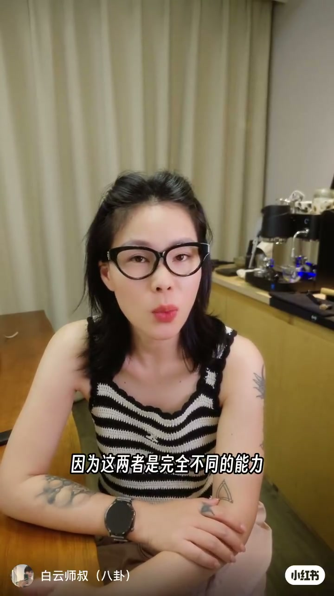
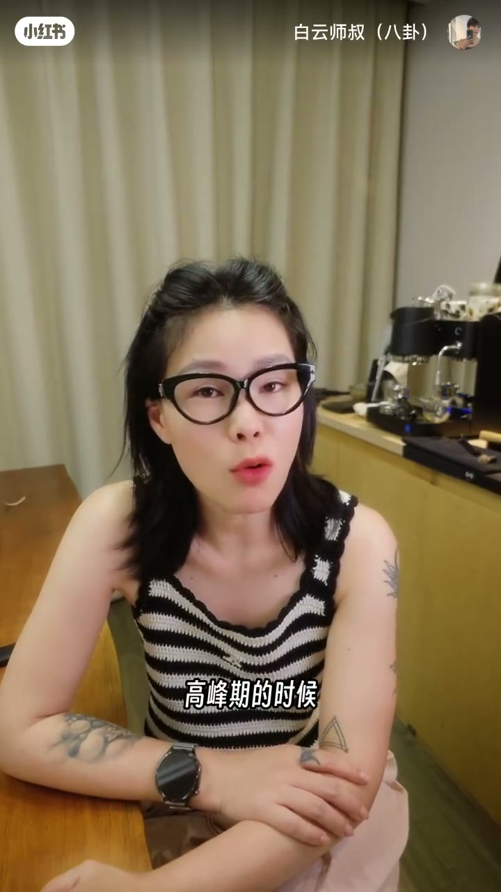
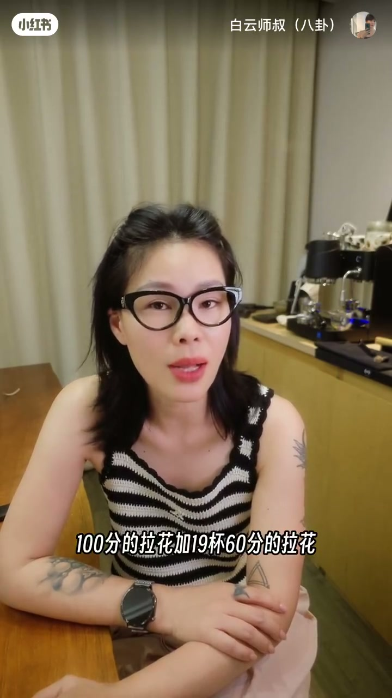
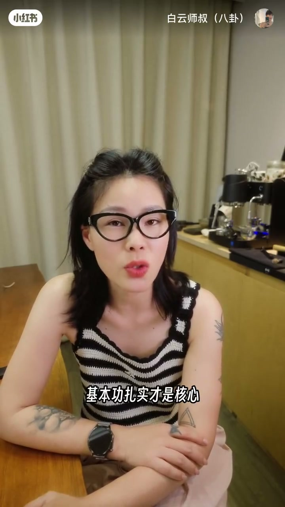

内容要点
白云师叔把拉花系列收在「最终章」：比赛冠军不等于门店高效出品，因为两者是完全不同的能力。比赛追细节、复杂度与创意，时间充裕；门店要稳定性、效率与一致性。核心命题是——比赛展示技术上限，日常出品守住下限与基本盘，基本功扎实才是两边共用的底座。
知识结构
比赛追细节创意；门店保稳定、效率、一致。高峰期可能 30 秒一杯连出十杯，一致要求极高。
比赛是上限，门店是下限。连续十杯约 80 分，胜过一杯 100 分加十九杯 60 分。日常出品才是基本盘。
无论比赛还是出品，基本功扎实才是核心。拉花系列完结，预告咖啡感官系列与评论区 DLC。
评估拉花能力别只看单杯天花板：门店价值在连续稳定的「下限」。比赛能抬技术上限，但日常出品与基本功才是真正基本盘。
00:00-00:24比赛冠军 ≠ 门店高效：两种完全不同的能力
开场直切反直觉结论：拉花比赛冠军，不一定能在咖啡店里高效出品——「因为这两者是完全不同的能力」。00:03 字幕把这句话钉死。比赛侧追求细节、复杂度与创意，而且时间充裕，你有足够时间完成作品。
门店侧换成另一套指标：稳定性、出品效率、出品一致性。高峰期可能需要 30 秒出一杯、连续十杯，这时对拉花一致性的要求「非常高」。收束句：「所以在门店稳定的出品才是核心。」画面始终是师叔坐在木桌前、背后意式机的口播机位。


00:24-00:43上限与下限：连续八十分 vs 单杯满分
作者用上下限框架重述：比赛展示拉花技术的上限；门店出品保证拉花出品的下限。接着抛出可计算的对照——连续十杯都能出品 80 分左右的拉花，对比「一杯 100 分的拉花加 19 杯 60 分的拉花」，问哪一个更稳定、更有价值、对门店更重要。00:32 字幕完整打出「100分的拉花加19杯60分的拉花」。
答案方向明确：比赛可以提升技术毋庸置疑，但「日常的出品才是真正的基本盘」。价值排序从「好看的天花板」转向「可交付的地板」。

00:43-01:05基本功是核心；系列完结与感官预告
收束金句不分赛场与门店：「不管是比赛还是出品，基本功扎实才是核心。」00:45 字幕同步出现。作者宣布以上就是整个拉花系列，后期会出一些「DLC」，欢迎评论区留言想继续看的拉花话题，按留言「加载」。
片尾预告下一系列聊咖啡感官，并完成 Coffee Casual Talk／白云师叔的招牌收场。整片几乎无拉花特写，信息全在论证结构里。

完整转录（46段）
以下文本由 Whisper medium 模型自动转录，可能存在少量识别误差，已尽可能修正。
拉花比赛的冠军呢
不一定能够在咖啡店里高效的出品
因为这两者是完全不同的能力
拉花比赛我们追求的是细节
是复杂度以及创意
且时间充裕
你有足够的时间去完成你的作品
在门店出品呢
我们要保证一定的稳定性
出品的效率以及出品的一致性
高空期的时候你可能需要30秒
出一杯咖啡连续十杯
那这个时候呢
对于我们拉花的出品的一致性的要求就非常高了
所以在门店稳定的出品才是核心
比赛呢展示的是我们拉花技术的上限
而门店出品呢
则是保证了我们拉花出品的一个下限
连续十杯呢
都能出品80分左右的拉花
和一杯100分的拉花
加19杯60分的拉花
哪一个更加稳定
哪一个更加有价值
哪一个对于门店来说
才是比较重要的
比赛呢可以提升拉花的技术
毋庸置疑
但是日常的出品才是真正的基本盘
不管是比赛还是出品
基本功扎实才是核心
那以上呢
就是我们整个拉花系列的视频了
那当然后期的话
我们也会出一些DLC
也欢迎各位在评论区留言留言
关于拉花你还想知道哪一些啊
我们会看大家的留言来进行一个加载
嗯
下一个系列我们来聊一聊咖啡感官
点个关注
不要迷路哦
This is Coffee Casual Talk
这里是白云师叔
我们下个视频再见
拜拜